Интервал, метрика и кернинг
Пространства между символами — важная, неотъемлемая часть дизайна шрифта.
Проектирование межбуквенного интервала шрифта должно осуществляться как неотъемлемая часть всего процесса проектирования шрифта. Для хорошей работы шрифта необходим хороший интервал.
В FontForge окно метрик позволяет проектировать метрики шрифта, изменять расстояние между ними и проверять, как глифы выглядят вместе. Окна метрик можно открыть из меню ‘Window’ или с помощью команды Ctrl + K.
Пространство между любыми двумя глифами состоит из двух компонентов: пространство после первого глифа и пространство перед вторым глифом. Эти пробелы между глифами состоят из ‘side bearings’ каждой пары глифов. Каждый глиф имеет левосторонний и правосторонний bearings; в приведенном ниже примере строчной буквы ‘a’ в Open Sans правый боковой bearings имеет значение 166 единиц, а левый боковой — 94 единицы.
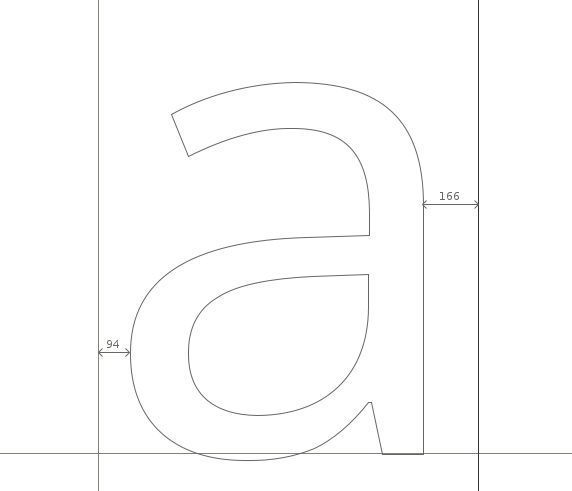
Основные функции окна показателей
Сторону bearings символов можно редактировать в окне метрик FontForge пятью способами:
- Перетаскиванием каждой боковой границы bearing вручную.
- Перетаскиваниеи персонажа вручную. Однако обратить внимание, что перетаскивание персонажа повлияет только на значение левой стороны bearing.
- Непосредственное редактирование значений в таблицах метрик Окна метрик.
- Увеличение/уменьшение с помощью клавиатуры.
- Использование команд в меню «Метрики» окна показателей.
Настройка значений Side Bearing с помощью клавиатуры
Один из методов быстрой и точной настройки значений показателей в FontForge — использование клавиш клавиатуры вверх, вниз, влево и вправо. Клавиши вверх и вниз используются для увеличения/уменьшения значений, а Alt + Up, Alt + Down, Alt + Left and Alt + Right используются для навигации по различным полям значений Metrics Window.
Общие принципы
Как правило, симметричные символы, такие как ‘A’ ‘H’ ‘I’ ‘M’ ‘N’ ‘O’ ‘T’ ‘U’ ‘V’ ‘W’ ‘X’ ‘Y’ ‘o’ ‘v’ ‘w’ ‘x’ будут иметь симметричные опоры, например, левая и правая опоры ‘H’ будет такое же значение. Однако обратить внимание, что это не жесткое и быстрое правило, а общее.
Размещая персонажи, которые создаются, доверять своим глазам. Суть в том, чтобы ‘design, look, adjust, look again’.
Для абсолютного новичка не думать, что надежные результаты достигаются, полагаясь на измеренное пространство. Например, хотя размеры двух персонажей могут быть неравными, глаз может видеть их равными. Очевидный пример этого можно увидеть при попытке разместить символы ‘H’ и ‘O’. Итак, в примере ниже боковые опоры ‘H’ и ‘O’ равны, но выглядят неравными. В нижней строке боковые опоры не равны, но расстояние кажется сбалансированным.
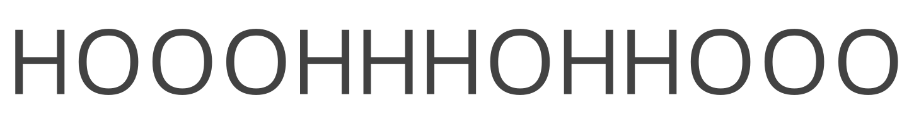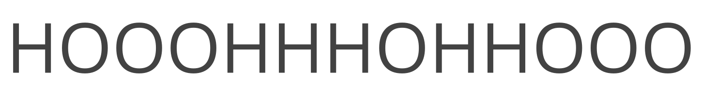
Инструмент для создания таких текстов доступен по адресу Stringmaker от Nina Stössinger.
Metrics Menu Commands для редактирования показателей
‘Center in Width’ — Это центрирует текущий глиф в пределах его текущей ширины.
‘Window Type’ — FontForge’s Metrics Window можно настроить двумя способами для настройки показателей;
- ‘Advance Width Only’ — в этом режиме представление показателей можно использовать только для регулировки ширины глифов.
- ‘Both’ — В этом режиме представление показателей будет корректировать либо ширину продвижения, либо значения кернинга.
‘Set Width’ — команда позволяет изменить ширину текущего глифа.
‘Set LBearing’ — позволяет изменить значение левого bearing.
‘Set RBearing’ — позволяет изменить значение правой стороны bearing.
Базовый подход к расстоянию
Следующий метод предназначен для того, чтобы эффективно начать разработку показателей шрифта.
Начиная со строки символов нижнего регистра ‘o’ в окне показателей, левый и правый sidebearings можно регулировать до тех пор, пока интервал между символами не станет правильным. Один из способов найти этот ‘rightness’ — найти пробел между символами ‘o’, чтобы сбалансировать пробелы внутри символов ‘o’. В общем, за исключением наклонных или курсивных шрифтов, левая и правая часть bearings строчной буквы ‘o’ должны иметь одинаковое значение. Как только удотворённость интервалом в строке символов ‘o’, добавить символ ‘n’ из шрифта (смотреть ниже), а затем попробовать отрегулировать сторону bearings ‘n’ так, чтобы ее интервал соответствовал балансу строки символов ‘o’. (смотреть ниже). Обратите внимание, что из-за особенностей того, как видят наши глаза, правая сторона bearing ‘n’ всегда будет меньшего значения, чем левая сторона bearing, а сторона bearings ‘o’ будет меньше, чем боковые опоры ‘n’.
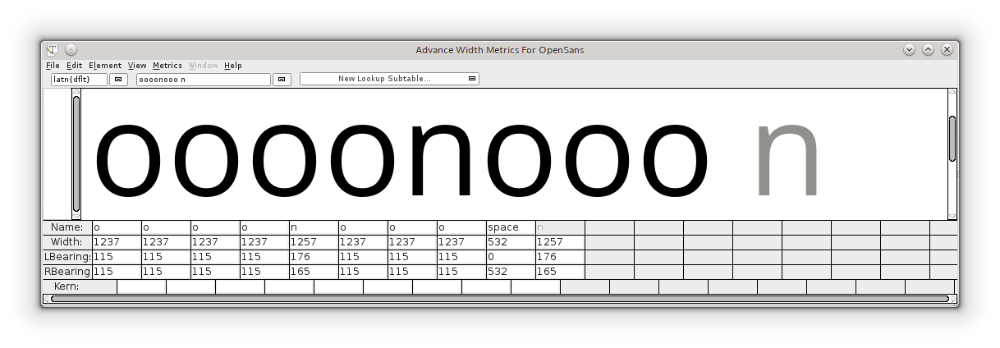
Как только ‘n’ и ‘o’ будут расположены на достаточном расстоянии друг от друга, их боковые опоры можно будет использовать для создания боковых опор для массива других символов: например:
- Левую сторону bearing ‘o’ можно использовать для левой стороны bearing ‘c’ ‘d’ ‘e’ и ‘q’.
- Правая сторона bearing ‘o’ может использоваться для правой стороны bearing ‘b’ и ‘p’.
- Правая сторона bearing ‘n’ может использоваться для правой стороны bearing ‘h’ и ‘m’.
- Левую сторону bearing ‘n’ можно использовать для левой стороны bearing ‘b’ ‘h’ ‘k’ ‘m’ ‘p’ и ‘r’.
Обратить внимание: —, приведенное выше следует использовать только в качестве руководства, которое можно использовать в качестве очень эффективной отправной точки для поиска правильных значений для этой стороны bearings.
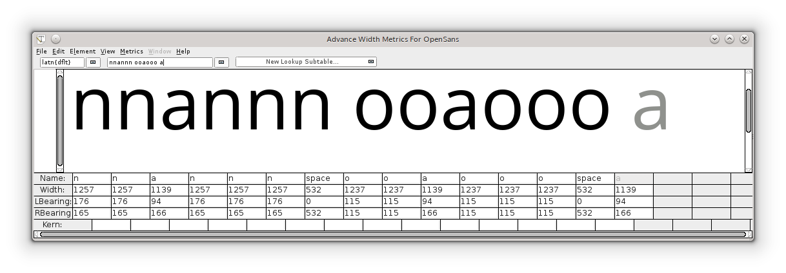
Отсюда имеет смысл расположить остальные боковые опоры символов нижнего регистра напротив строк символов ‘n’ и ‘o’, как показано на диаграмме выше. Опять же, доверять своим глазам, чтобы достичь правильного баланса персонажей.
Uppercase characters
Символы верхнего регистра могут располагаться с использованием тех же принципов, что и выше. Например, начнать со строки ‘Hooooo’ и регулировать правое направление ‘H’ до тех пор, пока оно не станет сбалансированным по отношению к строке символов ‘o’. Поскольку левое направление ‘H’ равно правому, прописные ‘O’ можно разместить на расстоянии от ‘H’ (смотреть ниже).
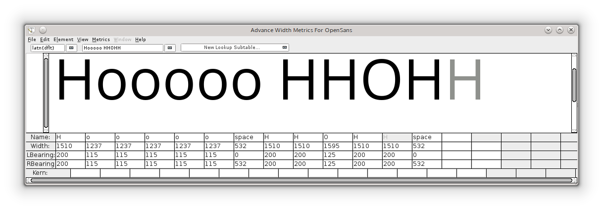
Отсюда все остальные символы могут быть размещены напротив символов, которые уже были размещены. Следует отметить, что этот метод можно использовать в качестве хорошей отправной точки для определения интервалов в шрифте, но вполне вероятно, что для достижения более высокого уровня хорошего интервала между буквами также потребуется более тонкая настройка интервалов. Другими строками символов, которые могут быть полезны в этом случае, могут быть массивы, такие как ‘naxna’ ‘auxua’ ‘noxno’ и ‘Hxndo’.
Kerning
Кернинг — это регулировка интервала между определенными парами символов. Кернинг обеспечивает индивидуальный интервал между парами символов, который применяется в дополнение к интервалу, обеспечиваемому боковыми опорами символа. Типичными примерами пар символов, в которых кернинг часто необходим для уменьшения интервала, являются ‘WA’ ‘Wa’ ‘To’ и ‘Av’. В приведенных ниже примерах видно, что без кернинга расстояние между парами букв ‘To’ и ‘Va’ слишком велико, тогда как с кернингом , пространство между этими парами символов гораздо более сбалансировано с ощущением расстояния в остальной части шрифта.
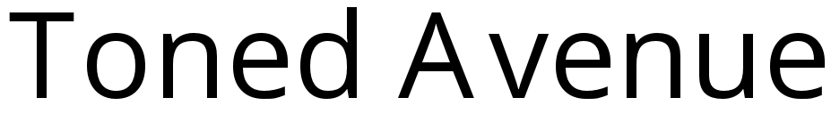 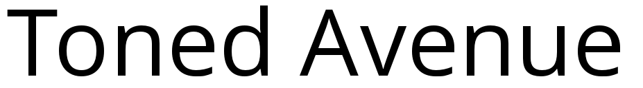
Metrics Window в FontForge можно использовать для создания как стороны bearings, так и значений кернинга. Значения кернинга можно применить к шрифту в FontForge несколькими способами. Два из них показаны ниже: кернинг с классами и кернинг с отдельными парами.
FontForge’s Metrics menu
‘Window Type’ — Окно FontForge Metrics можно настроить на два разных поведения, чтобы включить настройку кернинга:
- ‘Kerning Only’ — В этом режиме представление показателей можно использовать только для настройки кернинга.
- ‘Both’ — В этом режиме представление показателей будет корректировать либо ширину продвижения, либо значения кернинга.
‘Kern By Classes’ — Команда предоставляет пользователю диалоговое окно для управления классами кернинга.
‘Kern Pair Closeup’ — Команда предоставляет пользователю диалоговое окно, в котором можно настроить уже существующие кернинговые пары или создать новые пары (смотреть ниже).
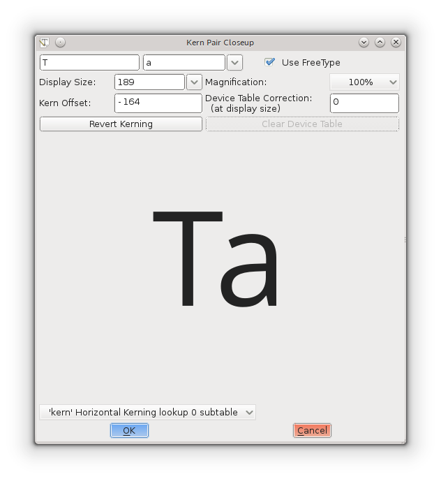
Настройка значений кернинга с помощью клавиатуры
Так же, как и при настройке значений бокового направления, значения кернинга можно быстро и точно редактировать в FontForge с помощью клавиш Up, Down, Left и Right на клавиатуре. Клавиши Up и Down используются для увеличения/уменьшения значений, а Alt + Up, Alt + Down, Alt + Left и Alt + Right используются для навигации по различным полям значений в окне показателей.
Кернинг отдельных пар
Это самый базовый уровень создания пар кернинга в FontForge. В Metrics Window значение кернинга между двумя символами можно настроить вручную, перетащив правый символ к левому символу или от него, либо отредактировав значение кернинга непосредственно в таблице метрик окна. Чтобы изменить значения кернинга путем перетаскивания символов, использовать маркер инструмента кернинга, который появляется, когда курсор мыши наводится между двумя символами (снимок экрана ниже). Значение кернинга в таблице показателей можно редактировать, вводом значения вручную или увеличивая/уменьшая значение с помощью клавиш вверх/вниз на клавиатуре.
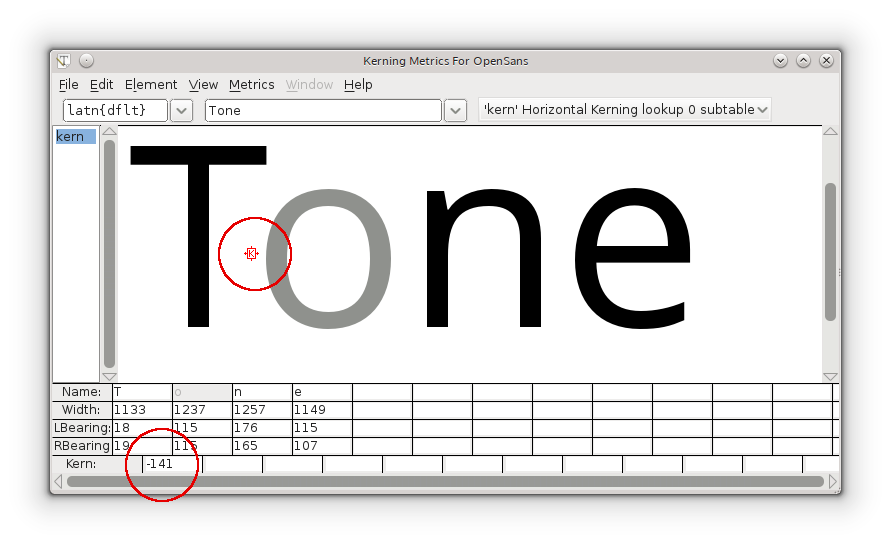
Кернинг с классами
Кернинг классов может сэкономить много времени!
‘kern class’ в FontForge можно создать для создания групп символов, к которым будет применено одинаковое значение кернинга. Например, можно создать класс —, назвать ‘o_left_bowl’ —, где символы ‘o’ ‘c’ ‘d’ ‘e’ ‘q’ всегда будут иметь одно и то же значение кернинга, если предшествует, например, символ ‘T’. ‘T’ также может быть членом другого класса, класса, который, вероятно, будет включать в себя другие персонажи, таких как Ткарон и Тбар.
Класс Кернинг — это один из видов поиска GPOS. Информацию о кернинге можно найти, перейдя в меню Element на вкладку Font Info, Lookups, GPOS. (Можно сделать это в любое время, чтобы вернуться к тому месту, где остановка.)
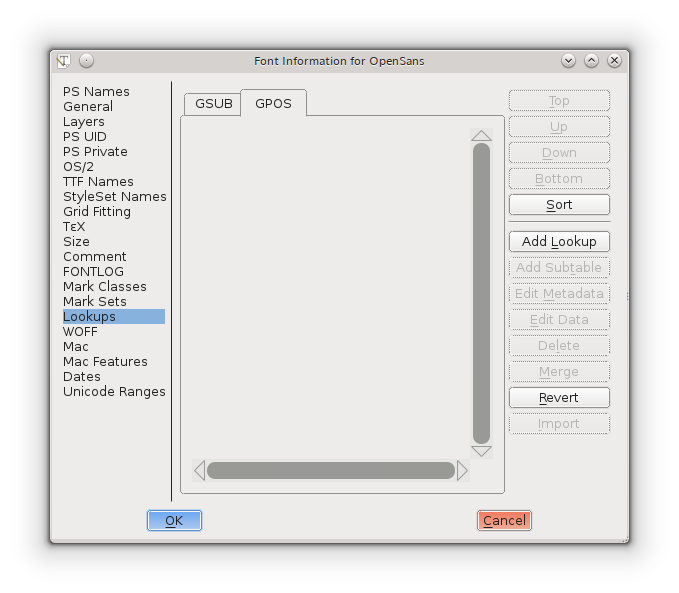
Нажать кнопку “Add Lookup” и выбрать Тип: “Pair Position (kerning)”.
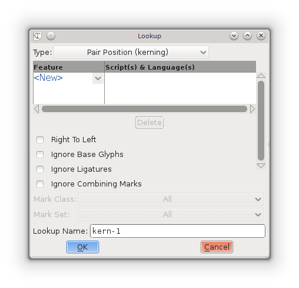
Не нажимать кнопку “New”; щелкнуть стрелку вниз рядом и выбрать “Horizontal Kerning”. “New” изменится на “Kern”. Принять имя поиска по умолчанию или изменить его, при желании и нажать кнопку ОК.
Возврат на вкладку GPOS, и теперь есть выбранная таблица поиска. Каждый набор классов кернинга находится в отдельной подтаблице. Чтобы создать подтаблицу, нажать кнопку “Add Subtable”. Подтвердить имя по умолчанию.
Затем будет показано окно с множеством вариантов:
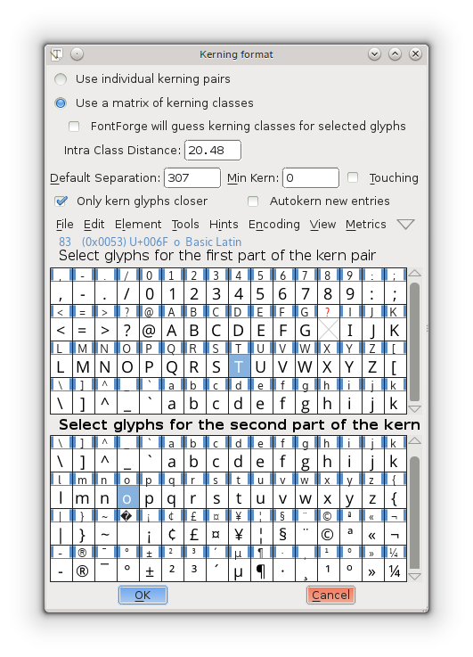
Вверху будет предложено выбрать “Use individual kerning pairs” или “Use a matrix of kerning classes”.
Если выбрать классы, будет представлено следующее диалоговое окно, в котором можно создавать классы. Если задача кернинговать ссылки вместе с оригиналами, выбрать классы.
Обратить внимание, что можно включить FontForge для ‘guess’ или ‘autokern’ значений кернинга между классами, которые создавать в диалоговом окне. Если использовать FontForge для определения значений кернинга, несомненно, понадобится немало проб, ошибок и экспериментов, но может иметь смысл использовать функцию автокерна как быстрый способ кернинга вашего шрифта и посмотреть, какие улучшения это может принести.
Остальные параметры оставить такими, какие есть, пока не появится причина попробовать другие значения.
После нажатия ‘OK’ в приведенном выше диалоговом окне будет представлено следующее окно, в котором можно точно настроить степень кернинга между этими двумя классами. Например, на втором снимке экрана ниже были созданы два класса: один класс, содержащий символ ‘T’, и один класс, содержащий символ ‘o’.
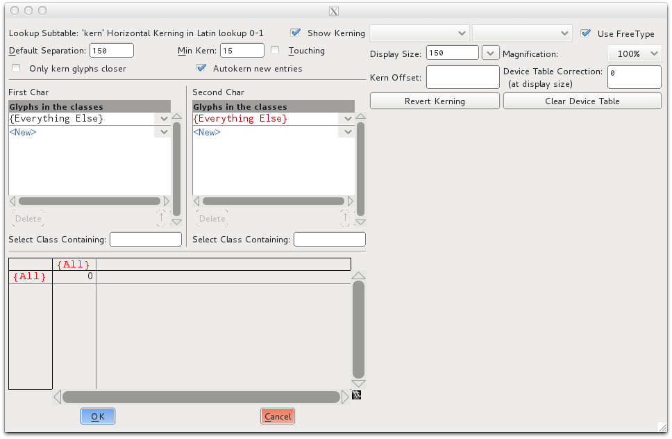
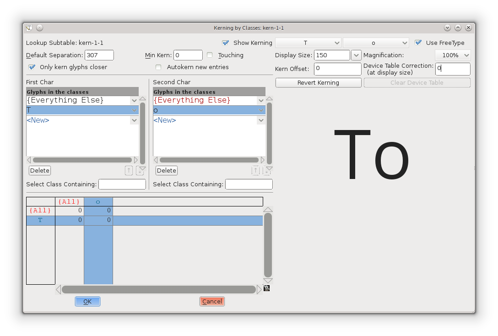
Можно выбрать все глифы и удалить классы позже или выбрать только те глифы, которые задача кернить. Выбрать все глифы, которые задача настроить одновременно, и Fontforge стит их в классы —, если только нет работы с разными системами письма, которые не требуется кернинговать вместе. (Latin, Greek, Cyrillic…).
Когда нажать кнопку ОК, появится большое окно с некоторыми параметрами вверху, двумя списками классов и матрицей внизу. Когда выбрать поле в матрице, видно, как кернена пара. Если не нравится, настроить смещение Керна в поле над отображением пары глифов.
Если произойдёт что-то странное, а это произойдет, нажать кнопку Отмена. Затем дважды щелкнуть подтаблицу (нажать знак плюса рядом с таблицей, если ее не видно), и вернуться в большое окно. Если без проблем выполняется большая работа, рекомендация нажать ОК и вернуться, чтобы не потерять работу, если произойдет что-то странное.
Окно показателей можно использовать позже для окончательной проверки. Хотя в этом окне можно вносить изменения, продолжаются вопросы, задача кернинговать класс или пару, и тому подобные придирчивые вещи. Почему бы не попробовать и посмотреть, понравится ли это? Но знать, что некоторым опытным пользователям это не нравится, и выполнять весь кернинг, как указано выше: Element, Font Info, Lookups, GPOS вкладка, развернуть, нажатием плюс, двойной щелчёк в подтаблице.
Ручной кернинг
Если значения автокерна необходимо скорректировать (а они будут!), то это можно сделать несколькими способами.
- Через диалоговое окно ‘kerning by classes’.
- Использование Metrics Window.
- С помощью команды ‘Kern Pair Closeup’ из меню Metrics.